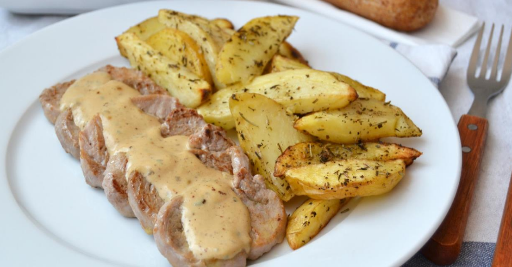

Solomillos con Salsa de Roquefort

Una deliciosa forma de preparar el solomillo de cerdo. Si te gusta el queso azul, ¡te chuparás los dedos!
Ingredientes:
- 1kg solomillo de cerdo
- 100g roquefort u otro queso azul
- 400g de nata para cocinar
- Aceite de Oliva
- Sal y pimienta
Preparación:
- Filetear el solomillo en medallones de 1 dedo de gordo
- Calentar en la sarten un poco de aceite de oliva y hacer los filetes a la plancha
- Cuando los filetes estén listos, los reservamos en un plato o una fuente
- Con el fuego bajo, en la misma sarten de los filetes echamos la nata y el queso
- Salpimentamos la salsa al gusto
- Dejamos la salsa al fuego durante 5 minutos. Cuando espese, retirar la sartén del fuego.
- Presentar en un plato los medallones y servir salsa por encima. Es recomendable acompañarla con patatas fritas o con pasta.
- ¡Disfrutar del plato preparado!
Para ver un video en YouTube del proceso, hacer click
aqui
(abre en una nueva pestaña)